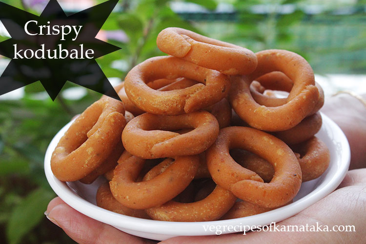

Kodebele

Description
INGREDIENTS
- ½ cup rice flour / akki hittu
- ¼ cup semolina / sooji / bombay rava
- salt to taste
- ½ cup maida / plain flour / all-purpose flour
- ½ tsp ajwain / carom seeds / oma
- pinch of hing / asafoetida
- 2 tbsp hot oil
- oil for deep frying
- for masala paste:
- ¼ cup coconut (fresh or desiccated)
- ½ tsp jeera / cumin seeds
- 5 whole dried kashmiri red chilli
- ¼ cup water (or as required)
INSTRUCTIONS
- firstly, in a mixing bowl take rice flour, rava and maida.
- also add ajwain and salt. combine well.
- furthermore pour 2 tbsp of hot oil and mix well.
- meanwhile prepare the masala by taking coconut, jeera and red chilli.
- blend to smooth paste adding water as required.
- now transfer the prepared masala paste over the flour.
- knead to smooth and soft dough.
- also roll and prepare small circles.
- now deep fry the kodubale in hot oil in batches.
- fry the kodubale till they turn golden brown and crisp on medium flame.
- and drain off on to a kitchen paper to remove excess oil.
- finally, enjoy kodubale, or store in a airtight container for 10-15 days once its cooled completely.
Back